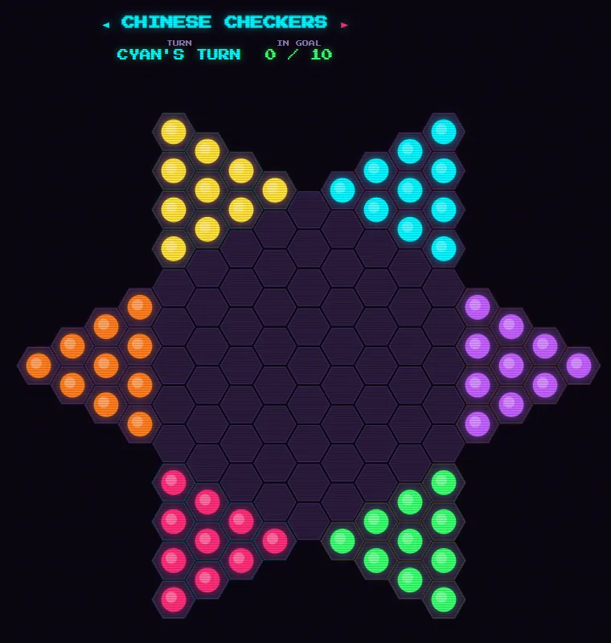
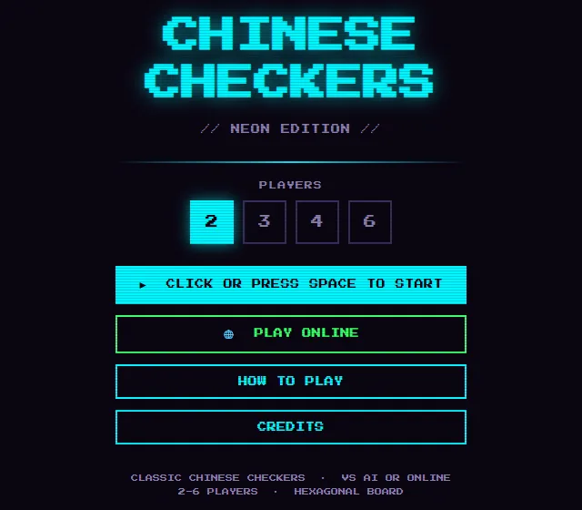
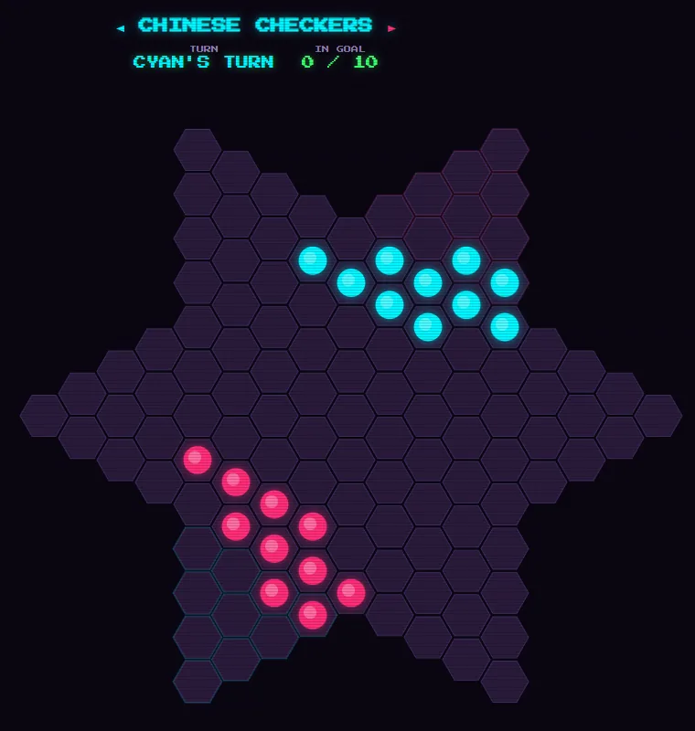

neon edition · hexagonal star · hop to win
Chinese checkers in the arcade's neon edition, on a hexagonal star with ten marbles each.
Play two, three, four or six players against the computer, or friends online with room codes and chat. Steps light up green, hops yellow, and hops chain.


pipx install magmacrunch-chinese-checkersgame by magmacrunch media